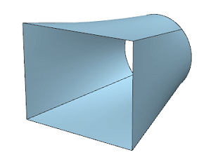
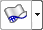
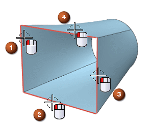
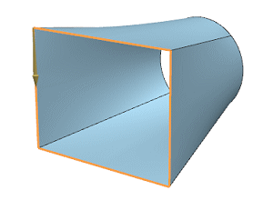
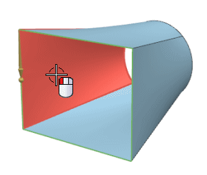
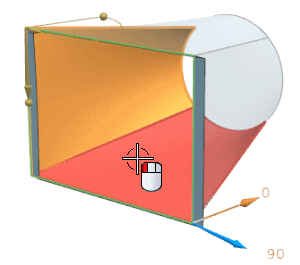
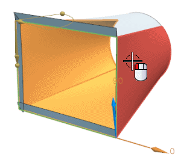
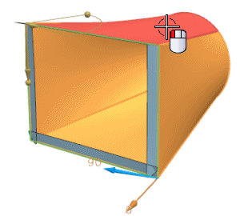
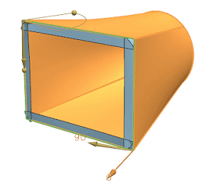
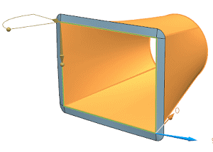

Define the extension profile and references
-
Open des19_85_law_extension.

-
On the Surface toolbar, from the Flange Surface Drop-down list, select Law Extension .
-
Confirm that Type is set to Faces.
-
On the Selection bar, from the Curve Rule list, select Single Curve.
-
In the Base Profile group, with Select Curve highlighted, select the four face edges as shown.


-
Click the middle mouse button to continue.
-
On the Selection bar, from the Face Rule list, select Single Face.
-
In the Reference Faces group, with Select Face highlighted, select the four faces as shown.





-
In the Reference Faces group, click Reverse Direction
 to have the extension surfaces point outward.
to have the extension surfaces point outward.
